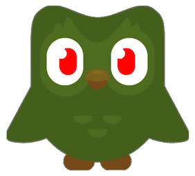

How might the diversity of language change in the future?
What is language?
Language is the principal method of human communication. Consisting of words used in a structured and conventional way, and conveyed by speech, writing, or gesture, language
constructs many aspects of our way of life. Language is diverse, being one of the features of humanity that sets our species apart from others on Earth.
But what happens when this diversity is taken away? Can we still claim we are more complex than our counterparts?
With the emergence of technology, we have seen new forms of language acquistion emerge. Take Duolingo for example. Duolingo is
an educational technology company that produces learning apps and provides language certifications. With over 40 languages to offer, users can learn
languages ranging from English, French, and Spanish to less commonly studied languages such as Welsh, Irish, and Swahili- all from the comforts of their phones.
Through its growing influences, technology has imprinted on the world of language, creating an interactive and engaging learning experience. So, what happens when these learning experiences become limited to a certain demographic?
